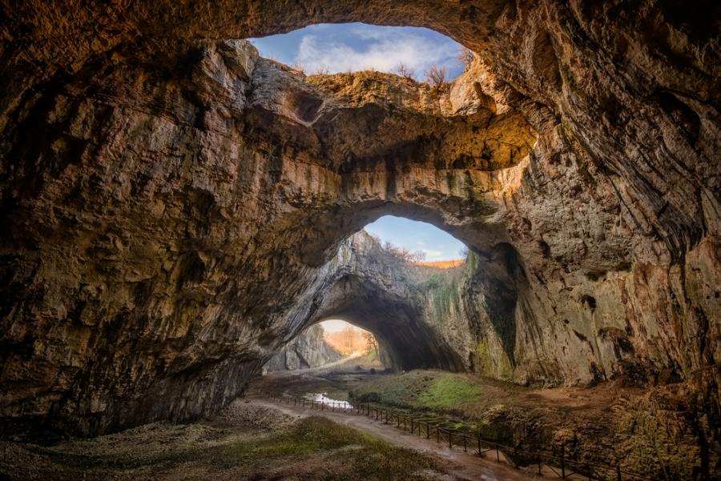

Деветашка пещера.
Деветашката пещера се намира на скалистия бряг на река Осъм, северно от село Деветаки. Една от най-големите пещери в България. Входът й е с височина 35 метра и ширина 30 метра.
Деветашката пещера е суха, много просторна и добре защитена от силни въздушни течения. На тавана й има седем огромни отвора, наричани от местните Окната.
